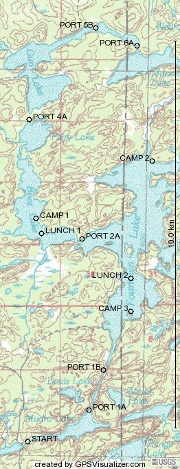
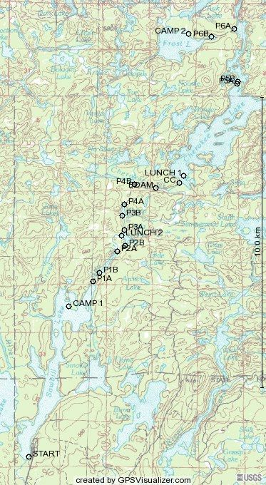

wheee! Back from two trips out to the Boundary Waters Canoe Area Wilderness (BWCAW). Great fun I say. Not too bad gear wise, and a bit disorganised on the second, but over all was still great fun. Made my list for next time too. (Bring extra snacks. Yes, you really need rain pants. Always pack extra snacks, even if you helped buy the food. A sleeping pad that packs smaller would be really nice. Did I mention extra snacks?)
I don't bring a camera on these trips, but others did. I'll have to see if I can get some of the pictures. I did bring a GPS unit this year. Was fun in its own way. Being concerned about the batteries dieing, I kept it off most of the time. Typically only turning it on to mark a waypoint. Which I did for portages and camp sites. I also grabed a few spots where we stopped for lunch that wasn't a camp site. And a few other features. (I marked one bearver dam, don't remember why though.)
All though this I was hoping that I would be able to take the way points, and then get some program that would show them on a map. I looked but couldn't find any free programs that did that. I think I found a couple pakages I could buy, but all of them made it clear that you couldn't redistirbute the maps they showed. And that is exactly what I want to do. Too bad. I did save the waypoint data though. So here it is for the first and second trips. I really had wanted to be able to show topo maps here. Oh well. (I'm gonna keep looking for something that will at least make a vector image of the waypoints.)
I would probably be excited about doing this again next year if I wasn't going hiking and camping in Alaska next month.
[Update: Fri May 27 18:06:59 CDT 2005]
Spiffy! I found a web site that will take GPS data and make little maps! So I went and did that quick. sigh Now I really wish I had kept tracks instead of just making a few waypoints. Oh well, Next year.
